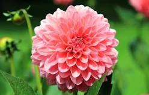
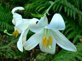
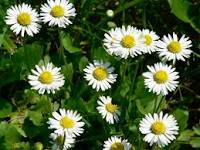

Dahlia

Dahlias are tuberous perennials, and most have simple leaves that are segmented and toothed or cut.
The compound flowers may be white, yellow, red, or purple in colour
Rose
There are hundreds of species and thousands of cultivated varieties (cultivars) of rose.
Sunflower

The common sunflower is a large annual forb of the genus Helianthus. It is commonly grown as a crop for its edible oily seeds
Lily

- lily, genus of 80 to 100 species of herbaceous flowering plants of the family Liliaceae
- Many lilies are prized as ornamental plants, and they have been extensively hybridize
- The lily is incredible for pollinators, attracting insects with its large colorful flowers and tasteful nectar.
Daisy

- Daisies are actually closely related to artichokes, so they're a great source of vitamin C.
- Additionally, daisies also have lots of medicinal properties—they're known to slow bleeding, relieve indigestion, and soothe coughs.
- As a flower, daisies symbolize innocence, purity, loyalty, patience, and simplicity
Gemini Solutions
 Gemini Solutions Page
Gemini Solutions Page